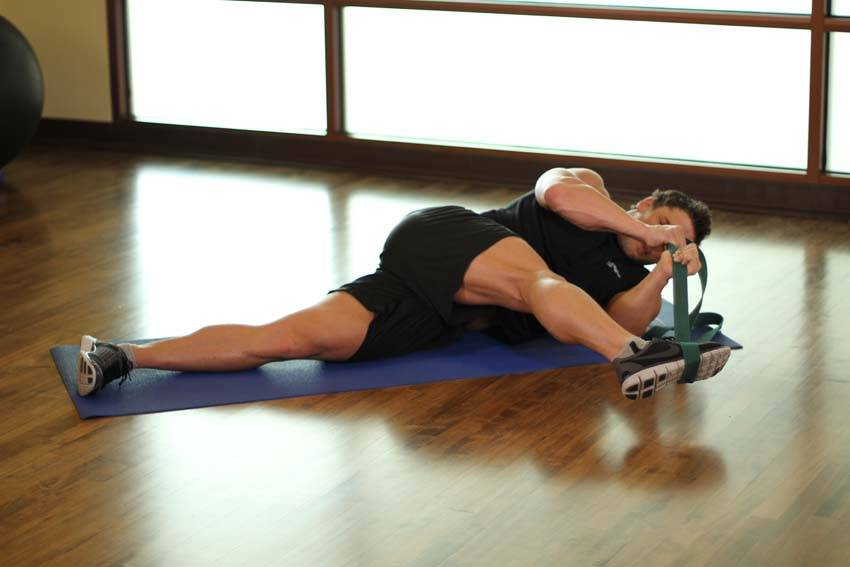

- Loop a belt, rope, or band around one of your feet, and swing that leg across your body to the opposite side, keeping the leg extended as you lay on the ground. This will be your starting position.
- Keeping your foot off of the floor, pull on the belt, using the tension to pull the toes up. Hold for 10-20 seconds, and repeat on the other side.